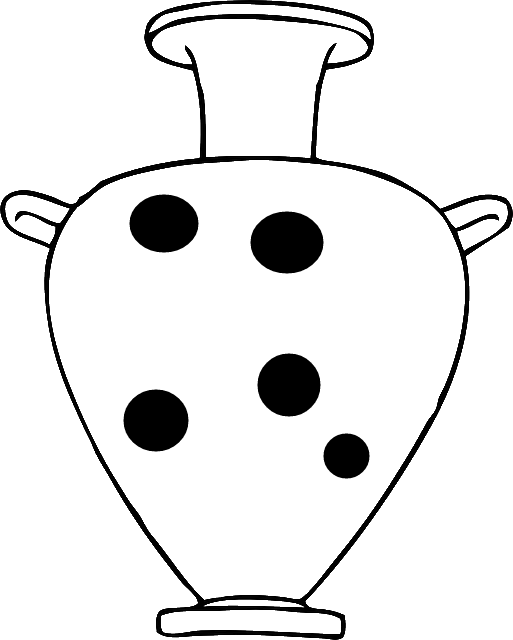

I used to think that computers worked on black magic. Rather, it's just that
the people behind them were magicians.
|
|
|
My journey into software engineering and computer science began in 2014. I had no previous
programming experience and, admittedly, chose to pursue a career in this field on pure instinct.
To date, it has been the second best decision of my life.
|

|
Foundational knowledge in Java
along with experience in:
- C/C++
- Javascript, CSS, HTML, AJAX
- Eiffel
- Verilog
|

|
Experience in version control with git. Familiar
with Eclipse and NetBeans
IDEs, in addition to GNU Make.
|
|
|
Lassonde School of Engineering, York University;
4th Year Software Engineering;
Peer Tutor for 1st year calculus since 2015;
Tutor for Computer Science since 2016
|
|
Avid squash player;
Recreational soccer player;
Recreational swimmer;
|
|
|